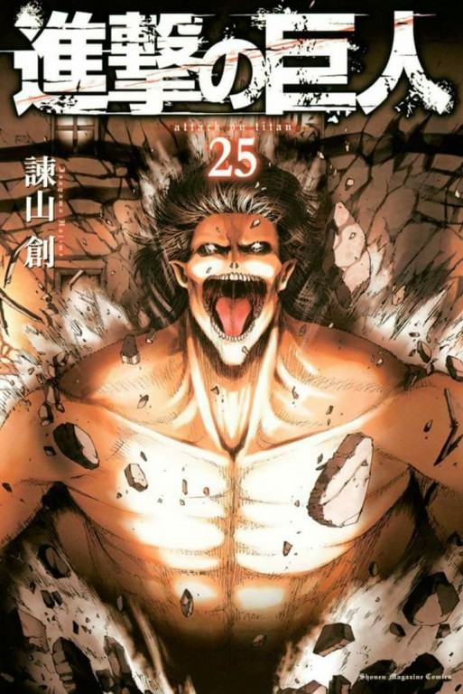
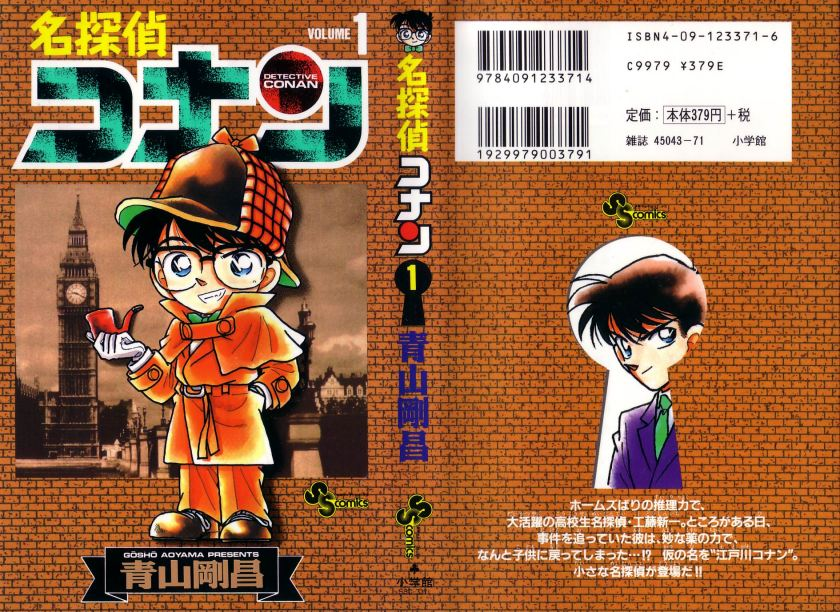
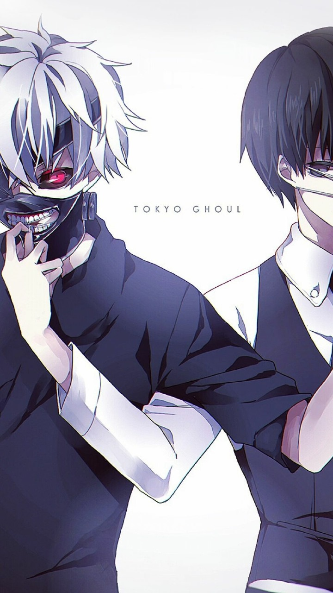
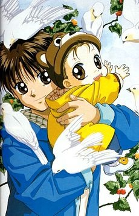
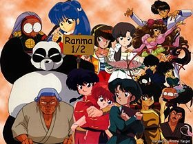

| الكتاب | المؤلف | الحالة | الغلاف | الفكرة العامة | اضغط للمشاهدة | اضافة | |
|---|---|---|---|---|---|---|---|
| هجوم العمالقة | ياسوكو كوباياشي | متوفر |  | هي سلسلة مانغا يابانية من تأليف ورسم هاجيمي إيساياما. وتقع أحداثها في عالم خيالي حيث يعيش البشر داخل أراض محاطة بثلاثة أسوار ضخمة تحميهم من عمالقة يأكلون البشر، تبدأ الأحداث حين يتم اختراق أحد الأسوار وهو سور ماريا حيث تقوم العمالقة بإبادة ثلث البشرية. | الموسم الاول | ||
| المحقق كونان | جوينيتشي كو توك | غير متوفر |  | وهو طالب في المدرسة الثانوية ومتحرٍ يساعد الشرطة والمفتش ميغوري في حل بعض القضايا، مشهور بذكائه وعبقريته التي تُفاجئ الجميع باستنتاجات تخالف التوقعات | الموسم الاول | ||
| Tokyo Ghoul | Sui Ishida | متوفر |  | تجري أحداث طوكيو غول في عالم بديل حيث يتواجد الغيلان، وهم أفراد يستطيعون البقاء على قيد الحياة فقط عبر تناول لحوم البشر، بين البشر العاديين بشكل سري، حيث يخفون هويتهم الحقيقية لتجنب ملاحقة السلطات لهم | الموسم الاول | ||
| انا و اخي | ماريمو راغاوا | غير متوفر |  | سلسلة مانغا للمؤلفة اليابانية ماريمو راغاوا (بالإنجليزية: Marimo Ragawa) نشرت بين عامي 1991 و1997 وتم تحويلها إلى الأنمي أنا وأخي عام 1996. يتحدث المسلسل عن ولد اسمه سامي توفيت أمه في حادث مرور وتركت له أخاه الصغير وسيم. والده يعمل موظفا بسيطا لذلك لا يجد الوقت الكافي للعناية بولديه، وهكذا يقوم سامي بترك أشياء كثيرة كان يحبها ليعتني بأخيه الصغير. | الموسم الاول | ||
| ينبوع الاحلام | رميكو تاكاهاشي | غير متوفر |  | تدور القصة حول فتىً في عمر السادسة عشر اسمه رانما ساوتومي، الذي كان يتدرب من صغره على الفنون القتالية، ونتيجة لحادث تعرّض له أثناء رحلته التدريبية، أصابته لعنة تحوله لفتاة بمجرد ملامسته للماء البارد، لكن الماء الحار يعيده إلى هيأته الطبيعية كفتى. | الموسم الاول |